Showing the work: AI test case generation QA teams can check
15 min read
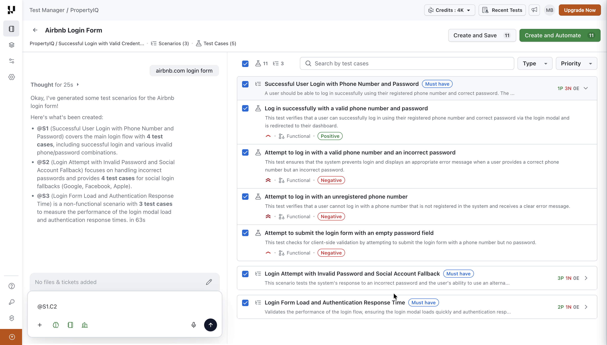
At a glance
- The ask: customers wanted AI test case generation. One deal was blocked until it existed, and BrowserStack already had it. This was competitive parity on a committed deadline.
- My goal: transparency. If users can see what the AI is doing and why, they can trust it here, and that trust carries over to the platform's other AI features.
- What shipped: a generator that shows its work while it runs, lets users point at any scenario or test case with an @-reference, and saves nothing without review.
- Delivered on the committed timeline for the deal that requested it.
- Beyond the feature: the same interaction pattern runs through deduplication and root cause analysis, and these features gave the design system its first AI components.
Situation
Problems before
-
Writing test cases by hand is slow.
Manual authoring takes a lot of time.
-
Importing doesn't remove the manual work.
CSV import and one-click migration from other tools are slow too, and still manual.
-
KaneAI writes one test case at a time.
It also can't take PRDs, documents or Figma files as reference.
-
The first generator (v1) didn't hold up.
Its design was in poor shape and couldn't scale to the changes customers were asking for.
Why now
- Customer pull: mid-market customers asked for AI test case generation, and one deal was blocked until it existed.
- Competitor parity: BrowserStack already offered it. I used their implementation as the reference.
- Business context:
- Test Manager is sold as its own product, mostly bundled with KaneAI.
- Teams moving from manual to automated testing also buy HyperExecute, LambdaTest's test orchestration platform.
Who it's for
- QA teams and PMs who write and maintain test cases.
Timeline
- Oct 2025
- joined LambdaTest
- Nov to Dec 2025
- AI Root Cause Analysis shipped
- Dec 2025 to Jan 2026
- test case generator v2 built; shipped in Jan 2026
- Jun 2026
- work on AI Deduplication began
- Jul 2026
- test case generator v3 shipped (video and Figma inputs)
- 28 Sep 2026
- AI Deduplication announced publicly
Task
- Business goal: ship within the committed timeline to unblock the deal. That was the success criterion.
- Scope:
- v2 (Jan 2026): images and PRDs as inputs, edge-case generation, @-reference refinement, MoSCoW grouping
- v3 (Jul 2026): video and Figma as inputs
- My design goal: transparency, to build trust. LambdaTest uses AI across many products and features; trust earned in one place carries to the others.
- Constraints:
- Model capability and engineering feasibility
- A fixed deadline tied to a customer deal
- v1's architecture, built around a "scenario" concept that the rest of the product doesn't have
- How I worked:
- Studied BrowserStack's generator as the parity reference
- Reviewed designs with the PM, engineering and the cofounder
- Used AI to run UI and UX audits from several perspectives, and to synthesise feedback from those stakeholders
- No usability testing: it wasn't part of the team's process (see Learnings)
Action
1. Rebuild from first principles
- Decision: start over instead of patching v1.
- Why: v1 was in poor shape, and its design couldn't scale to the v2 scope.
2. One prompt box, all the context
What I designed
- Entry point: "Generate with AI" in the repository toolbar, next to "Review Duplicates" and "Add Test Case".
- Two modes:
- Generate scenarios creates full sets of scenarios and test cases.
- Quick Author takes the prompt plus any files or tickets to the KaneAI playground, which authors a single test case.
- Inputs: text, voice, uploads, Jira, Azure DevOps and Linear. v2 added images and PRDs; v3 added video and Figma.
- Caps: maximum scenarios and maximum test cases per scenario (1 to 20 each). They show again in the session header.
- Session context: one drawer holds files, tickets, project instructions and org instructions, so users never leave the session.
- Instruction edits save to project or org settings.
- A warning says so before saving, and role-based access applies.
- Memory toggle: a brain icon in the session input turns Memory Enhancement on or off. When it's on, the AI uses existing test case data and patterns as context. LambdaTest's launch announcement calls this "Smart Context".
Why
- Caps: the AI can't generate an unlimited number of scenarios or test cases, so there has to be a limit. Without caps, users had no way to decide how many they wanted before generating. Caps give them that choice and make the system's limits visible.
- Instructions inside the session: users see every input shaping the output without leaving. It also helps teams discover project and org instructions nobody has set up yet.
UX principles at work
- Visibility of system status: caps repeat in the session header.
- User control and freedom: users choose their own caps.
- User control and freedom (memory): users switch memory on or off.
- Error prevention: a warning before instruction edits change settings for the whole project or org, plus role-based access.
- Recognition over recall: all context visible in one place.
Who decided what
- The integrations (Jira, Azure DevOps, Linear) were parity and the PM's call.
- Voice input carried over from v1.
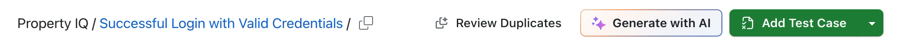
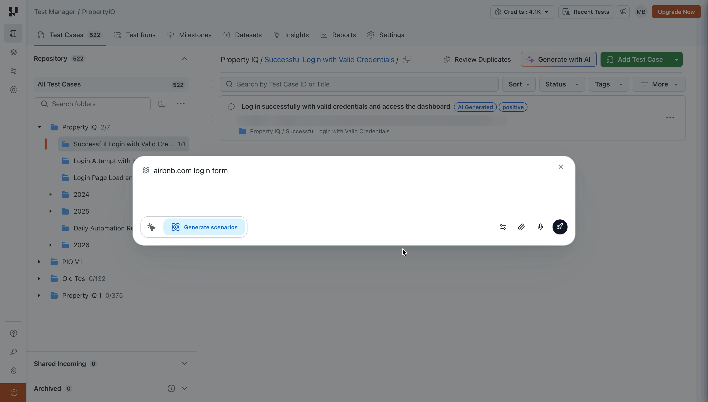
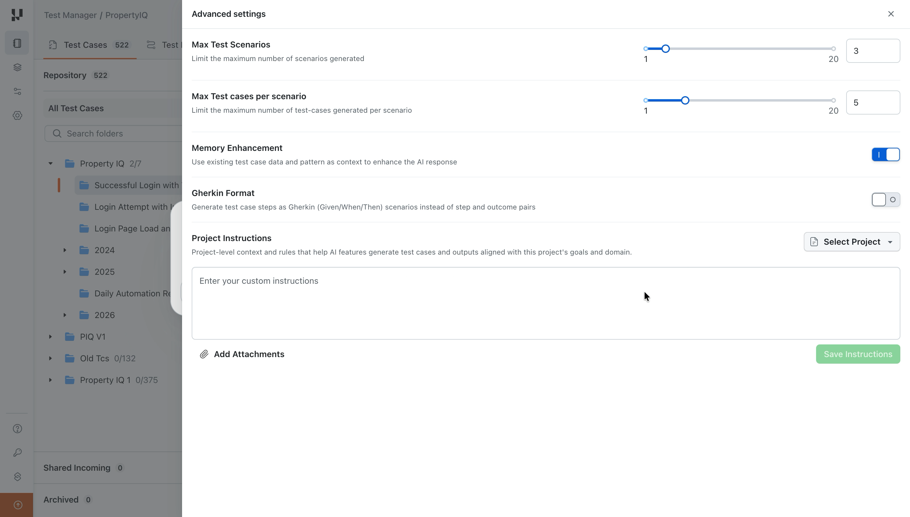
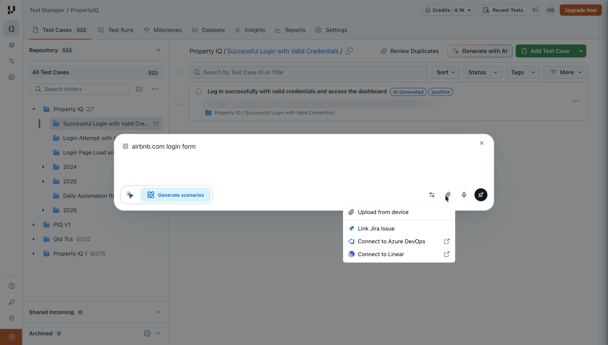
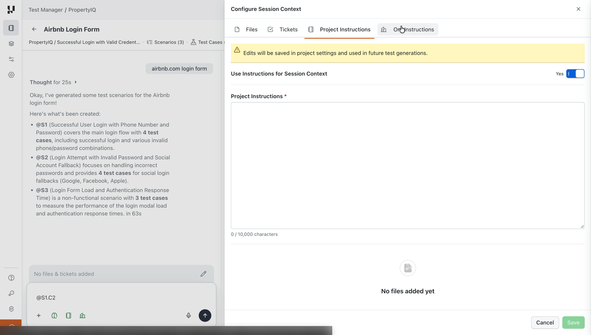
3. Show the work while it runs
What I designed
- Progress bar: a real percentage and a status line.
- Live reasoning: a "Thinking" stream that collapses to "Thought for 25s" and can be reopened.
- Scenarios first, then test cases:
- Scenarios appear with their MoSCoW tag.
- Test cases then fill in, and the positive, negative and edge counts tick up.
- Stop Generating, available the whole time.
- A closing summary that names each scenario by its reference (@S1, @S2, @S3), with counts and time taken ("in 63s").
Why
- About 10 to 30 seconds pass before the first scenario appears. A spinner would hide what's happening; I wanted users to see what the AI is doing and how.
- In one run, the stream showed that the AI couldn't open the page it was asked about and fell back on existing test cases. Without the stream, nobody would know why the output leaned on assumptions.
UX principles at work
- Visibility of system status: progress, status line and live reasoning.
- Perceived latency: incremental rendering puts partial results on screen early.
- User control and freedom: stop at any time.
- Calibrated trust: users see when the AI is guessing.
Who decided what
- I pushed for streaming and partial results. Engineering built them, which added to their work.
- Engineering decided to show the model's raw reasoning. A summarised version was never discussed.
- The model writes the reasoning and the output.
Trade-offs
- Raw reasoning shows internals such as record IDs and variable names: transparent, but noisy. (Engineering's call.)
- The percentage is real; the status labels rotate. A label can read "Designing meaningful test scenarios" while the AI edits one test case.
- Cost isn't shown before generating. Users see the credits counter drop, but not the cost up front.
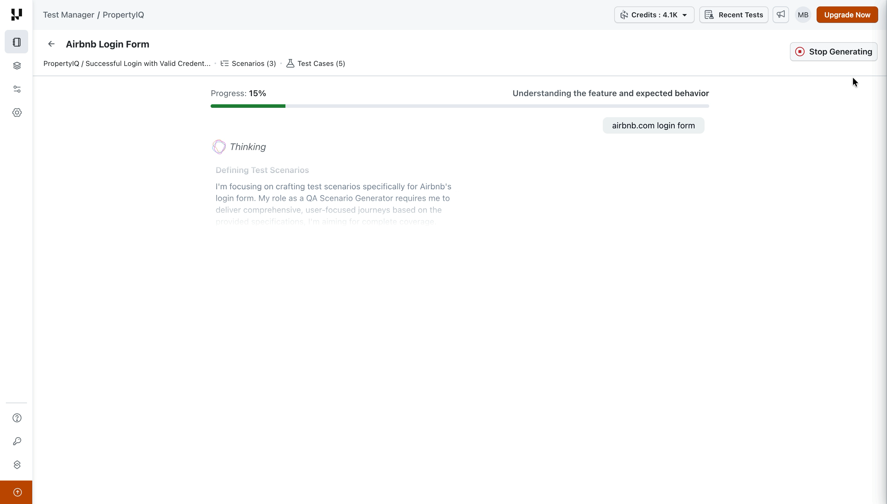
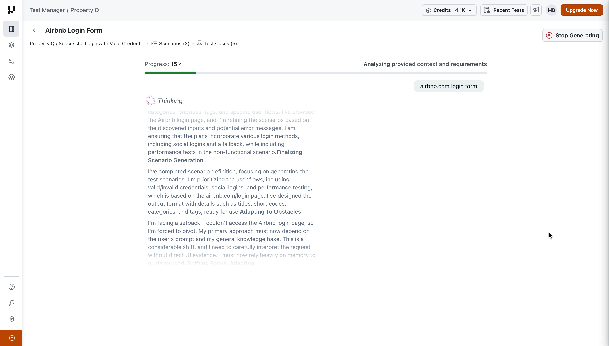
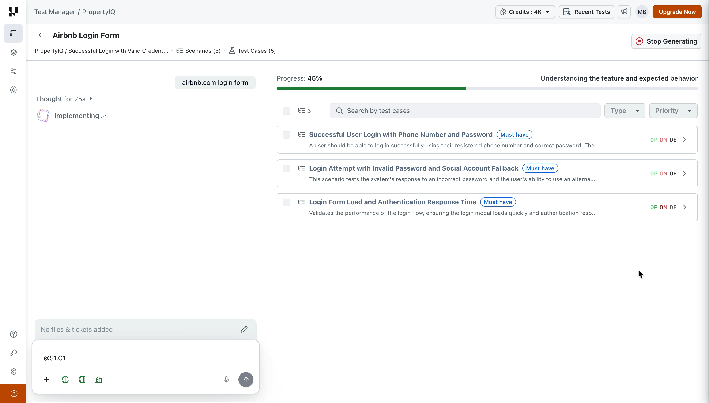
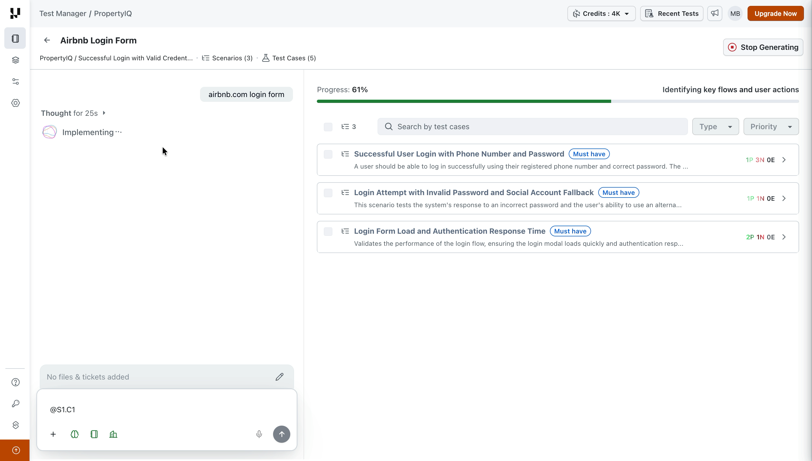
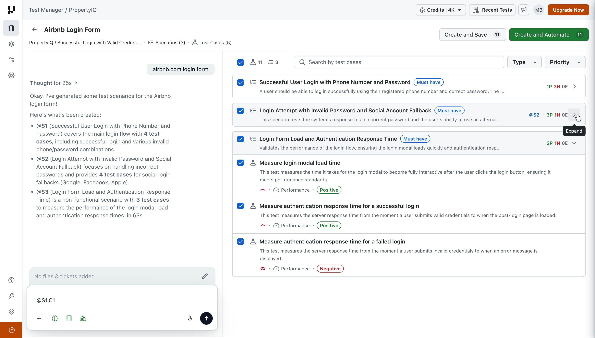
4. Nothing enters the repository without review
What I designed
- Everything starts selected. Users deselect what they don't want; there's no delete. Counts on both buttons update live ("Create and Save 11" becomes 9).
- Scannable cards:
- Each card shows title, description, priority, type (Functional, Performance) and a Positive or Negative tag.
- Collapsed scenarios show their MoSCoW tag and positive, negative and edge counts.
- Full detail on demand:
- A side drawer shows a test case's description, pre-conditions, and steps with outcomes, all editable.
- "Reviewing 1 of 4" with Previous and Next lets users review one test case after another.
- Search, plus Type and Priority filters.
- "AI Generated" tag on every saved test case. It's filterable in the repository and removable.
Carried over from v1
- "KaneAI test plan" tab in the same drawer: the step flow KaneAI uses if the user automates a test case. It's unchanged from v1.
Why
- Pre-selection: a design decision shaped by the business. We want teams to add as many test cases as possible, and deselecting a few is less work than selecting many.
- Steps in the drawer: the list stays scannable, and users open details when they choose to.
- AI Generated tag: teams can filter AI-made test cases and remove the tag after review.
UX principles at work
- Human-in-the-loop: the AI proposes; the user decides what gets saved.
- Overview first, details on demand / progressive disclosure: cards, then the drawer, then the steps.
- Information scent: MoSCoW tags and counts on collapsed scenarios.
- Provenance labelling: the AI Generated tag.
Trade-off
- Pre-selection makes saving fast, but it also makes it easy to accept without reading. The AI Generated tag lets teams find and review these test cases later.
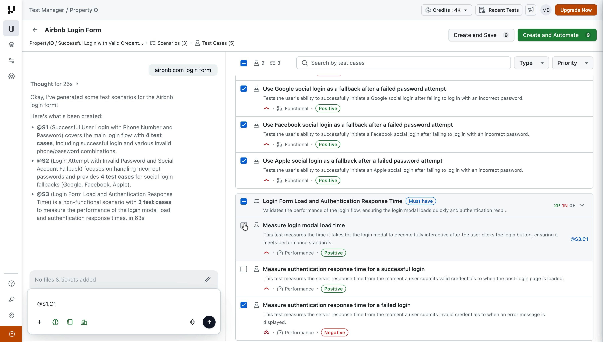
5. Point, don't regenerate: @-references
What I designed
- Every scenario and test case has an address: @S1, @S1.C2.
- Discoverable syntax:
- The address appears on hover.
- The input box teaches it: "Update test cases or type @ to refer them".
- One instruction can reference several items.
- A plain-language reply says what changed, for example: "Converted @S1.C2 from a negative test case … to a positive one" (39 seconds in this run).
Why
- Fix exactly what's wrong without regenerating everything. This was my addition beyond the competitor reference, where refinement is scoped with checkboxes.
UX principles at work
- Recognition over recall: addresses on hover and a hint in the input box.
- User control and freedom: change one test case without touching the rest.
What I learned from using it
- The summary is text only. Nothing in the list marks which fields changed (see trade-off 2).
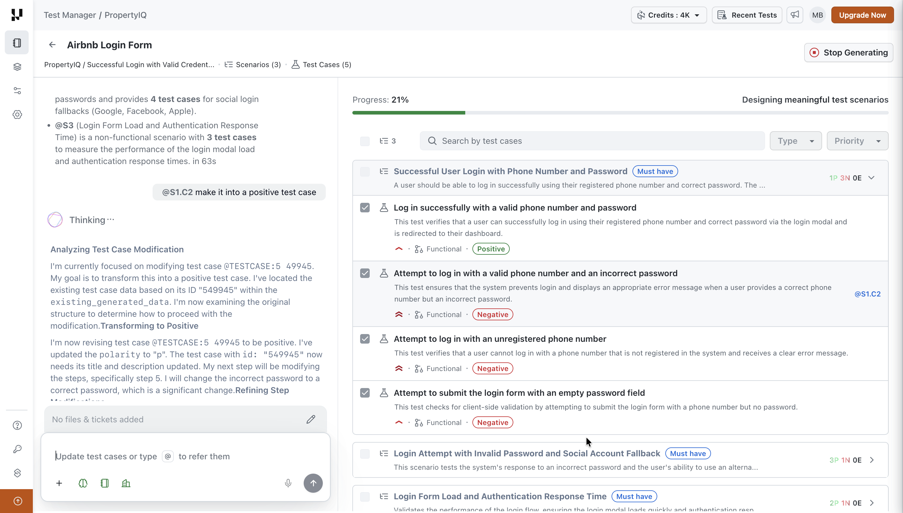
6. Two ways out: save or automate
What I designed
- Create and Save: saves the selected test cases for manual testing.
- Create and Automate: shown only on plans that include automation. A drawer asks:
- Where to run: desktop browser, mobile browser or mobile app, plus the website URL and device.
- Test settings: agent concurrency, dynamic test data, auto-dismiss pop-ups, network configuration.
- It also shows how many test cases are automation-ready (8 of 11 in this run) and labels the feature experimental.
- Automated test cases run on HyperExecute as part of KaneAI test runs.
- These settings appear only when automating. Create and Save skips them.
Why
- One step from generated test cases to automation for teams whose plan includes it.
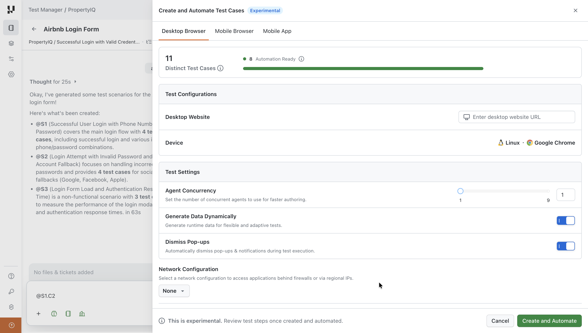
7. One pattern across three AI features
- I applied the same interaction pattern to test case generation, deduplication and root cause analysis, so users learn it once.
- Jakob's law, on a design language that borrows from GitHub Primer.
- My call; not written down.
AI Deduplication: the high-stakes version
What it does
- AI with vector search finds duplicate test cases in a project or folder and scores each one against a base test case.
What I designed
- Before scanning: users pick the scope and a minimum match percentage.
- Results:
- Base test cases on the left, each with its duplicate and marked counts.
- Duplicates on the right, each with a match percentage and a colour dot (darker red means a closer match).
- Side-by-side compare and Ignore for every match.
- Nothing is pre-selected. Users mark each duplicate themselves.
- A running tally in the footer, by confidence band: above 80%, 50 to 80%, 20 to 50%, below 20%.
- Delete opens a modal where users type DELETE to confirm.
Why
- Deletion is permanent. Every safeguard adds a deliberate step before it.
- The opposite default to the generator: the generator starts with everything selected (adding is the goal); dedup starts with nothing selected (deleting can't be undone).
- Why delete, not archive: removing duplicates from the repository is the whole point of the feature, and Archive didn't exist yet when dedup shipped.
UX principles at work
- Error prevention: threshold, opt-in selection, typed confirmation.
- Calibrated trust: match percentage plus confidence bands.
- Human-in-the-loop: the AI finds; a person deletes.
Launch: announced publicly on 28 Sep 2026.
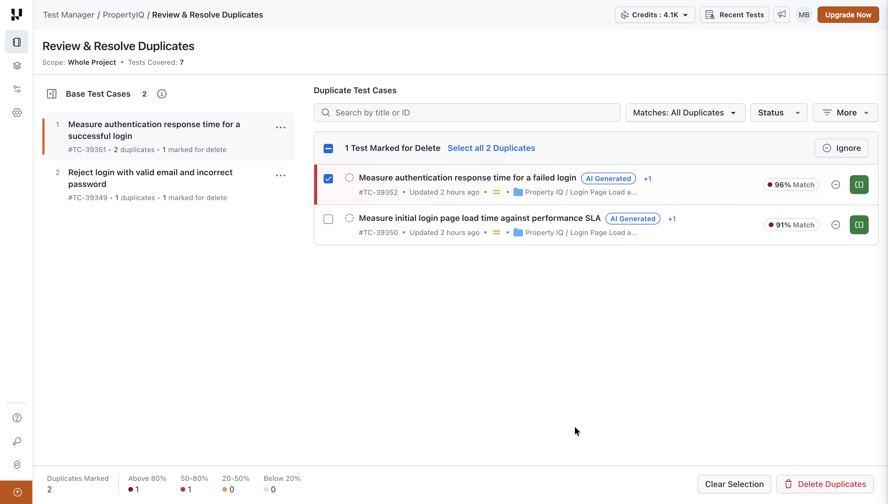
AI Root Cause Analysis: dense output made readable
What it does
- When an automated test fails, the AI identifies the likely root cause.
Before
- Users scoured logs in Automation and HyperExecute by hand. How long it took depended on the failure type, its complexity and the length of the run.
Who decided what
- Product and engineering decided what the analysis contains, based on what's technically feasible.
- I designed how it reads: every part below.
What I designed (information architecture)
- Verdict first:
- A two-level category (for example, Product Bug, then UI Data Defect).
- A one-sentence summary.
- Error trends for that test.
- Detailed analysis, collapsed by default.
- Event timeline: the root cause first, then its effects, each labelled and expandable (Show, Hide).
- Evidence on demand: the relevant automation log sits under the step it explains, with a copy button.
- How to fix it: numbered next steps.
- Feedback: "Suggest Improvements", confirmed with "Your changes are saved and will enhance future RCA results."
Why
- The raw material (logs, commands, network data) is heavy. I made it digestible for technical users without hiding the evidence.
UX principles at work
- Overview first, details on demand: verdict, then timeline, then logs.
- Progressive disclosure: collapsed analysis, Show and Hide per event.
- Lower extraneous cognitive load: one summary sentence instead of raw logs.
- Information scent: category chips and Root Cause and Effect labels.
8. From features to the design system
- Before these features, Retro Glitch (the design system) and LTComponents (the code library) had no AI components.
- I introduced the first ones with these features and, over time, got them adopted in other products.
- The components: AI button, AI icon button, AI shimmering text and AI labels.
- Few of them appear in these three features, because the features shipped first. (Case study B covers this.)
Results so far
- On time: v2 met the committed timeline for the deal that requested it.
- Shipped and extended: v2 in Jan 2026, then v3 (video and Figma inputs) in Jul 2026. Live in production.
- Now on the public product page: @-reference refinement and MoSCoW grouping appear on LambdaTest's Test Management page as "Conversational Refinement" and "Scenario-Based Prioritization".
- Deduplication launched publicly on 28 Sep 2026.
- First AI components in the design system and code library, adopted beyond these features.
Trade-offs: what shipped, why, and what I'd do next
1. Per-case source traceability
- What shipped
- A generated test case doesn't show which part of the input it came from.
- Why
- Not in v2 or v3 scope. Product set scope around the committed timeline and team capacity; v2 and v3 scope covered new input types.
- Whose call
- Product
- What I'd do next
- A source chip on each test case that opens the exact input excerpt it came from.
2. Change-diff after refinement
- What shipped
- The AI describes its change in text; the list doesn't mark what changed.
- Why
- Not in scope, for the same reasons.
- Whose call
- Product
- What I'd do next
- Highlight changed fields and add a "changed only" filter.
3. Session save and history
- What shipped
- Sessions can't be saved and reopened, and iterations aren't versioned.
- Why
- High engineering effort. I proposed saving sessions; version history was in the PM's own prototype. Product cut both.
- Whose call
- Product
- What I'd do next
- A session list with restore, and a version per iteration.
4. Permanent deletion in dedup
- What shipped
- Deleting duplicates can't be undone. Safeguards add friction before it: nothing pre-selected, visible counts, type DELETE.
- Why
- Removing duplicates from the repository is the whole point of the feature, and Archive didn't exist yet when dedup shipped.
- Whose call
- Feature scope at launch
- What I'd do next
- Pitch adding Archive next to Delete in dedup, now that Archive exists (I designed it for Test Manager), so duplicates can be restored.
5. Scenario becomes folder
- What shipped
- Scenarios in the session become folders in the repository on save. Nothing tells the user: after saving, they land on the first new folder, with its test cases (tagged AI Generated) on the right.
- Why
- The backend has no scenario entity, and the generator's architecture was built around v1's scenario concept. I flagged the mismatch; we kept it.
- Whose call
- Product
- What I'd do next
- Say it at save time: "3 scenarios will be saved as 3 folders in [location]".
6. Dedup merge
- What shipped
- Users can delete duplicates but can't merge them. I designed merge.
- Why
- The open question of which fields win when two test cases conflict. Product moved merge out of scope because of it.
- Whose call
- Product
- What I'd do next
- A field-by-field merge preview where users pick the winning values.
Other calls I'd revisit
- Everything pre-selected (my call, shaped by business): measure how many saved AI test cases get edited or deleted later.
- Steps only in the drawer (my call): check whether users open the drawer before saving.
- Raw reasoning (engineering's call): add a summarised layer, with the raw stream on demand.
- Rotating status labels next to a real percentage: tie each label to a real stage.
- Cost not shown before generating: show the estimated credits before the user submits.
Teamwork: where we disagreed
- Streaming and partial results: I pushed for them; engineering took on the extra work. Shipped.
- Scenario becomes folder: I flagged the mismatch; the PM kept it for architecture reasons. Disagree and commit.
- Saving sessions: I proposed it; product cut it for effort and timeline.
- Dedup merge: I designed it; product cut it over which fields win.
- Edge cases: on some features, I got the PM to extend scope for edge cases that were crucial for delivery. For example, on cross-project test case sharing, the PM hadn't covered a bulk selection that mixes test cases already shared with ones not yet shared. I got it into scope: the flow had to handle sharing the new ones and editing the existing shares together.
Leadership
- Set one AI interaction pattern across three features, on my own initiative.
- Created the first AI components in the design system and code library, then drove their adoption in other products.
- Proposing in-app notifications to the Test Manager PM. They aren't on the roadmap, but a future feature will need them.
Learnings
- Validate before shipping, even on a deadline. No usability testing happened. Next time: short task-based sessions with internal QA teams before release.
- Agree on success metrics before launch. There was little follow-up data after release, so I seldom learned which decisions underperformed. Next time: define acceptance and refinement events with the PM up front.
- Transparency needs editing. Raw reasoning and rotating labels show activity, not always meaning.
- Show cost before work. Users should know what a generation costs before they press send.
- AI changed how I design:
- I use AI for heuristic audits and to synthesise stakeholder feedback.
- Building quick prototypes to "show, don't tell" led me to start contributing production code.
Let's Talk
Rajat Garg, Human designer powered with AI